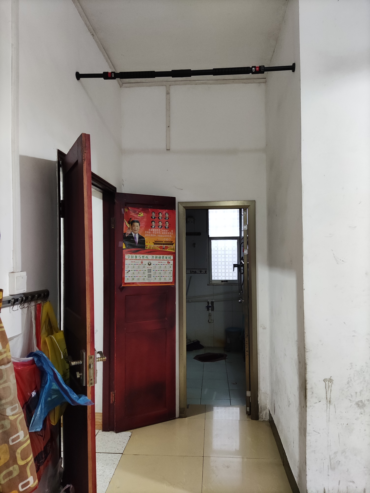
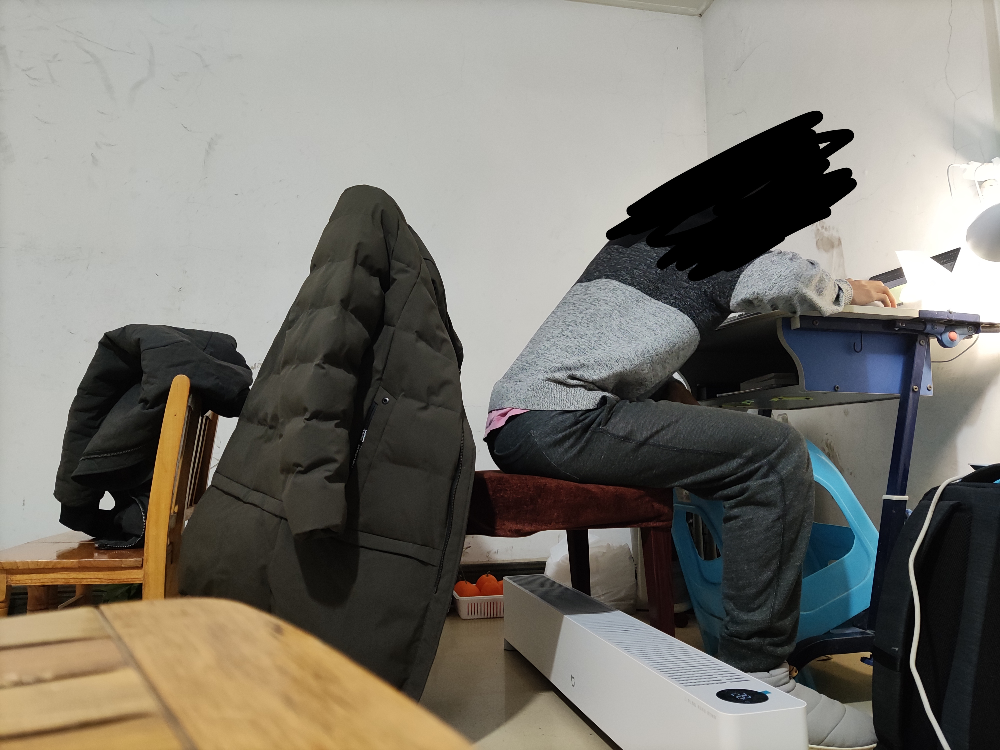
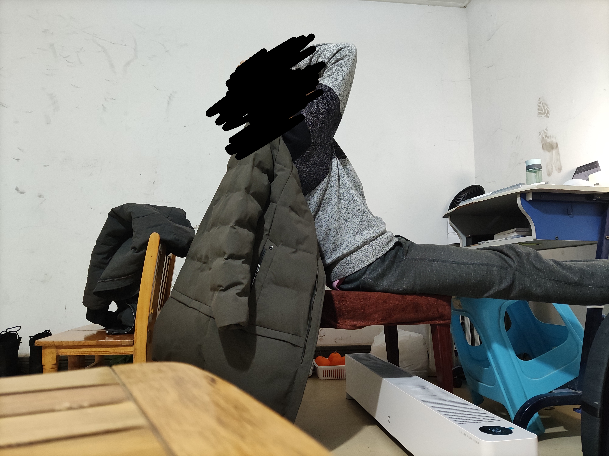
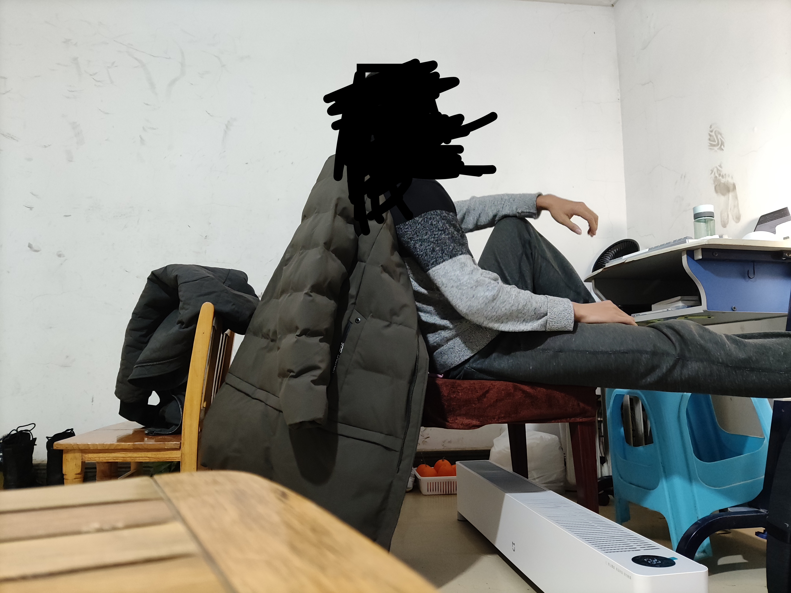
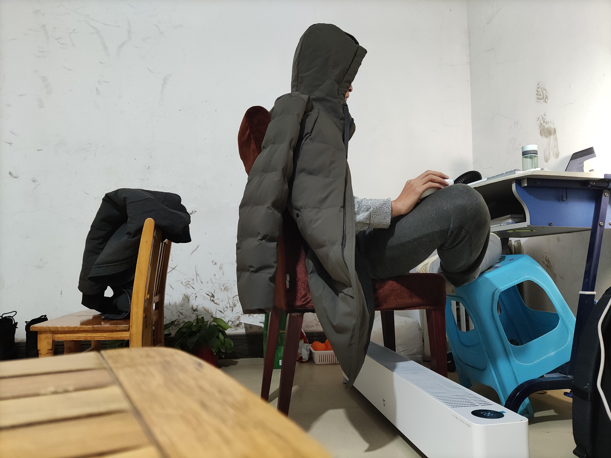

我不知道彻夜不眠是否会影响一个20来岁青年的身体健康，但我的确连续三十天严格执行了sleep every other day计划， 以两天为一个循环，睡两次，躺着8小时和坐着3小时。 我也不知道间歇性熬夜会不会影响一个20来岁青年的心理健康，那我看我确实有点不正常。 我的经验里没有太多实用的小技巧，通篇都是指导思想，如果你不认可，请默默离开，我不想争吵。
我每天至少路过一次这个单杠，看到它我会跳上去，顺手练一练背，然后下来吃东西。
ps.这个单杠距离地面280cm，我人高175cm，穿鞋举手大概235cm，而我想要跳起来抓住这根杆子， 只用指尖是不可能抓住单杠的，所以我至少需要跳到285cm。这说明我的身体机能一切正常。
我30天来基本没有疲倦过，除了：
以及其他的主要身体活动：
我也想知道。
难吃的饭和难吃的菜（2人以上共享）：午餐晚餐 餐餐150g左右的白饭，200g左右的肉类，以及3块钱一把的青菜（体积大概有一个篮球大小）
好吃的饭和好吃的菜（1个人自己吃）：鸡蛋每天5个或更多，混合坚果合计100g左右，水果主要是香蕉苹果合计1kg左右，早餐是汤圆粉面馒头包子， 以及间隔加餐，偶尔煎牛排、鸡胸肉，吃得不够会加一勺蛋白粉。
除此之外，只有水，没有任何零食。
晚上22：00到第二天08：00只喝水，非常饿，这段时间不做剧烈运动。
其实我并不喜欢吃吃吃，我通常都是在饿肚子，只有当我快饿的不行的时候，才会张口进食，但一开口就要吃饱，省得待会饿的难受。
每天以最舒适的姿势过活，这分明就是一种浪费！生命的力量放着不用不就是浪费吗？
你甚至不需要知道为什么，
Because function is senior to structure
身体功能的强大不是我们能够想象的，从来没尝试过 不代表我们无法承受。我们的身体从一开始被设计好以来就不是两块骨头、 肌肉、韧带、肌腱等等相连之后 他们能干啥或者不能干啥。
我们是有血肉的生物，不给生物一点危机感，其生命就会枯萎。
Because function is senior to structure
我的床长这样：

全年如此，未曾改变，有时候确实很冷，有时候确实很热，但我认为让身体太好受简直就是一种浪费。
通常，我的思路与一般人完全相反的：直觉往往很可靠——只要我们反向操作。
比如蹲下时膝盖要不要超过脚尖？
当然要狠狠超过脚尖。（有兴趣的去搜美国杜克大学的研究）
比如久坐腰酸了应不应该休息？
我们正着弯曲腰杆，酸了，就应该反着弯曲伸展它。脖子酸了，同理。
我们需要一个什么样的正确坐姿？
没有最正确最舒适的坐姿，你需要像我一样，不断变换，不断调整：
   上面说的和通宵学习半毛钱关系都没有，但是这篇文章为什么取名通宵学习呢？
心灵的强大才是我们源源不断的动力，想要挺住，持续不间断通宵工作学习，首先一步就是心态的转变。
其次，扔掉你房间里的所有东西，或把这堆东西放到客厅，包括床，包括桌椅板凳，包括衣柜橱窗。直到屋子里只剩下你自己。
接下来进行新装备的购置，能买新的就买新的，重新考量哪些需要哪些不需要。因为判断一个东西有没有价值的最好办法就是假设它不存在， 当我们又想起它时，它的价值立马就会浮现出来，我们正需要这个东西。
相信我，你可以。
从初一到大二，我每个月零花钱始终是2000元，自16岁生日第二天办理了一张储蓄卡后，我大概每个月会存下500元。 我所有的衣食行全部自己管理，包括车票机票，包括新年衣服，包括健身器材，包括学车费用，包括大学开学xx件套： 电脑手机行李箱自行车以及所有生活用品，连我头上的灯都是我自己装的。现在我手头上仍然存有10000元左右， 因为我不需要玩具，不需要生日礼物，不需要聚会，没有社交不需要社交费用，不需要任何形式的娱乐活动。 我对礼物只有一个要求：money。而我家人只负责每月15号打2000进我的账户里。
所有人都能做到，只看对自己要求严不严格。
必要的装备（不要买某宝劣质品）：
至于用什么设备学习，并不重要，但是，最好使用带有蓝光的设备，可以帮助我们保持清醒。
至此，准备工作完成，接下来就是正式开始实施计划。
第一天：当晚不睡
第二天：9：00~12：00（坐椅子上睡）
第二天：23：00~7：00（躺床上睡）